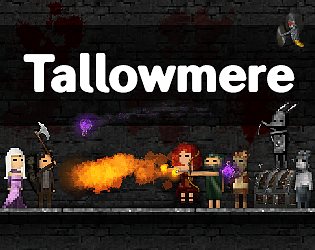

Tallowmere
Tallowmere
Detalhes
|  | |
| Tempo de jogo | Não Jogado |
| Última Atividade | Nunca |
| Adicionado | 04/04/2025 0:19:52 |
| Modificado | 04/04/2025 0:20:47 |
| Status de Conclusão | Not Played |
| Biblioteca | Itch.io |
| Fonte | itch.io |
| Plataforma | PC (Windows) |
| Data de Lançamento | 17/02/2014 |
| Pontuação da Comunidade | 80 |
| Avaliação da crítica | |
| Pontuação do Usuário | |
| Gênero | Hack and slash/Beat 'em up Indie Platform Strategy |
| Desenvolvedor | Chris McFarland Teyon |
| Editor | Chris McFarland Teyon |
| Funções | Co-Operative Multiplayer Single Player |
| Links | Official Steam Itch YouTube Android Twitch |
| Tag | [GGDeals] Synced |
Descrição
Lusting for the latest? Check out Tallowmere 2: Curse of the Kittens.


Raise your shield. Embrace Lady Tallowmere's dungeons.
Indulge Lady Tallowmere. See how far through her lovingly violent dungeons you can delve in this 2D indie action roguelike-inspired platformer.
New rooms are procedurally generated every time you play, meaning you'll have to be on your guard for every randomly-placed enemy, elite, boss, and treasure chest you'll come across.
Each room gets progressively bigger, harder, and more rewarding the further you go.

The concept is simple yet hard to master:
Brace yourself with your shield as you learn the quirks of each foe and trap so you can strive for that "one more run" high-score victory! Each dungeon is infinite in length so it's up to you to push your limits; a local scoreboard lets you track your greatest efforts.
Available for Windows, macOS, Linux, and Android. Play with keyboard (and optionally mouse), or use your favourite gamepad/controller.
Tallowmere offers single-player and local co-op madness (up to 4 players, desktop-only) for fun frantic couch gaming.
To those who will be lured into Lady Tallowmere's dungeons: good luck.
Languages & Translations:
- English
- Finnish / Suomi – Tomi Turkki & Olli-Samuli Lehmus
- French / Français – Christophe Braguy
- German / Deutsch – Spiffosi, sePL, & John Westfield
- Italian / Italiano – Luca Pattarini
- Japanese / 日本語 – Teyon Japan
- Korean / 한국어 – The Balance
- Polish / Polski – Maciej Ułanowicz
- Portuguese-Brazil / Português-Brasil – Lucas Videla
- Russian / Русский – Tycho Davidianus
- Simplified Chinese / 简体中文 – Kai Shao
- Slovenian / Slovenski jezik – Alen Korez
- Spanish / Español – Jose M. Gaspar
- Turkish / Türkçe – A. Ozkal
Further Notes:
- The current build on itch.io is version 352.9. For details, visit tallowmere.com/changelog
- Purchase Tallowmere from itch.io and receive a Steam key from your itch.io account page.
- The Android port requires Android 4.4 or higher and OpenGL ES 2.0 or higher. Further details here. For a list of supported Android controllers, click here.
- Soundtrack contains 13 MP3s.